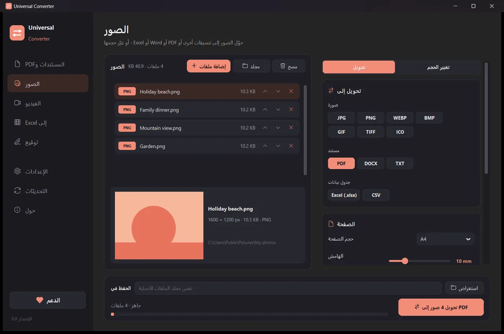
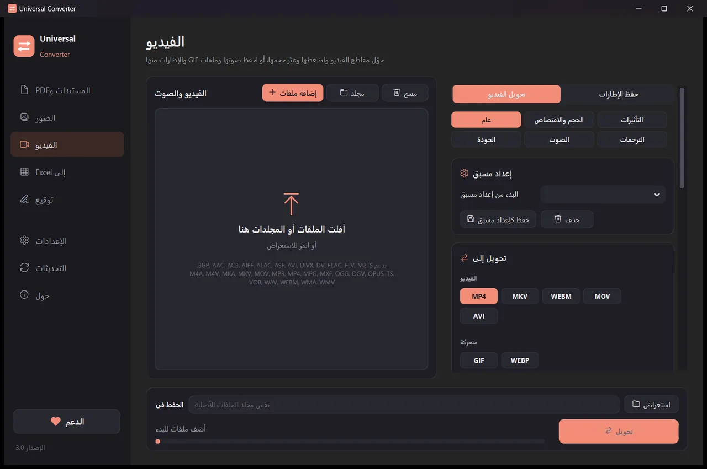
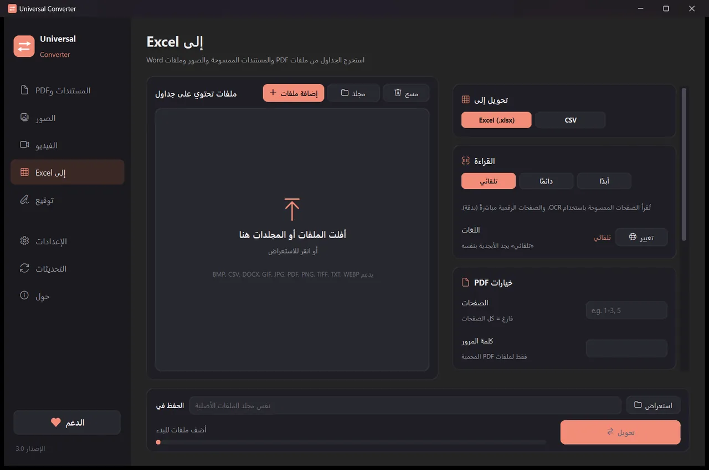
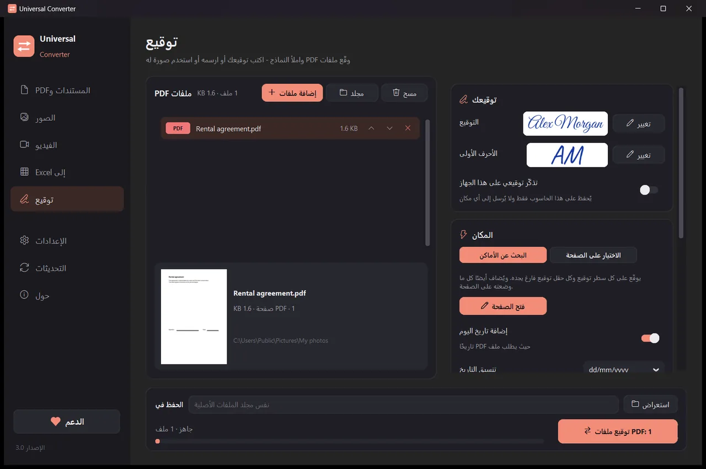

حوّل ملفاتك على جهازك
الصور والمستندات والفيديو والصوت وملفات PDF والجداول إلى Excel، كلها في تطبيق واحد. لا يُرفع شيء: لا تغادر ملفاتك جهازك أبدًا.
طريقة التثبيت والتحديث
- افتح ملف .dmg المنزّل واسحب Universal Converter إلى مجلد التطبيقات.
- افتح التطبيق. في المرة الأولى يحظره macOS لأنه غير موقّع من Apple: انقر «تم».
- افتح إعدادات النظام > الخصوصية والأمان، ومرّر للأسفل، وانقر «الفتح على أي حال» وأدخل كلمة المرور. تفعل ذلك مرة واحدة فقط.
التحديثات: إذا سمحت بذلك عند فتح التطبيق أول مرة، فإنه يتحقق من الإصدارات الجديدة في كل مرة يبدأ فيها، ويتحقق من توقيعها الرقمي، ويثبّتها عندما تختار.
طريقة التثبيت والتحديث
- انقر «تنزيل لنظام Android» على هاتفك.
- افتح الملف المنزّل. إذا سأل Android، فاسمح للمتصفح أو مدير الملفات بتثبيت التطبيقات.
- انقر «تثبيت».
التحديثات: يتحقق التطبيق مرة يوميًا تقريبًا ويخبرك عندما يكون إصدار جديد جاهزًا. نزّله بالطريقة نفسها وثبّته فوق القديم؛ تُحفظ إعداداتك.

خاص
كل شيء يعمل على جهازك. لا رفع، ولا انتظار في طابور، ولا حدود للحجم.
مجاني
مجاني الاستخدام، بلا إعلانات ولا حساب ولا علامة مائية.
18 لغة
العربية والإنجليزية واليونانية والإسبانية والإيطالية والألمانية والفرنسية والبرتغالية والبولندية والروسية والعبرية والصينية واليابانية والكورية والتاميلية والأفريكانية واليوروبا والهوسا.
خمس أدوات في نافذة واحدة

المستندات وPDF
التحويل بين PDF و Word و ODT و RTF و TXT و Markdown و HTML و EPUB و PowerPoint و Excel. تحويل الصفحات إلى صور ودمج عدة ملفات في PDF واحد. تُحفظ الخطوط والأحجام والألوان. صغّر ملفات PDF إلى الحجم الذي تختاره.
الصور
التحويل بين JPG و PNG و WEBP و TIFF و BMP و GIF و ICO. تغيير الحجم بالبكسل أو النسبة المئوية أو حجم الملف، ودمج الصور في ملف PDF أو Word، وقراءة النص في الصور (OCR). يمكن إضافة ملفات PDF أيضًا: تصبح كل صفحة صورة.

الفيديو
تحويل الفيديو بين MP4 و MKV و WebM و MOV و AVI وضغطه باستخدام AV1 أو H.265 أو H.264 أو VP9. القص والاقتصاص والتدوير وتغيير الحجم، وإنشاء GIF، وحفظ الإطارات كصور، أو الاحتفاظ بالصوت فقط بصيغة MP3 أو M4A أو FLAC أو WAV أو OGG أو Opus. على Android: MP4 أو MKV مع H.264 أو H.265؛ القص والاقتصاص والتدوير وتغيير الحجم وحفظ الإطارات، أو الاحتفاظ بالصوت بصيغة M4A.

إلى Excel
نقل الجداول من ملفات PDF والمسح الضوئي والصور إلى Excel أو CSV: كشوف الحسابات المصرفية والفواتير وقوائم الأسعار. يقرأ العربية والإنجليزية واليونانية وأكثر من 30 لغة أخرى.

توقيع
وقّع ملفات PDF واملأ النماذج. اكتب اسمك بخط يدوي، أو ارسم توقيعك، أو استخدم صورة له. يجد التطبيق أسطر التوقيع بنفسه، أو تنقر حيث يجب أن يكون التوقيع أو الأحرف الأولى أو التاريخ أو النص أو علامات الاختيار. وقّع ملفات كثيرة دفعة واحدة؛ وتبقى الملفات الأصلية دون تغيير.
- يستخدم بطاقة الرسومات للفيديو عندما يستطيع: عادةً أسرع من 5 إلى 20 مرة.
- اسحب مجلدات كاملة: يُحوَّل كل ملف دفعة واحدة.
- يخبرك عندما يخص ملف ما تبويبًا آخر، وينقله إليه بنقرة واحدة.
- يخبرك بالإصدارات الجديدة؛ وعلى Windows و Mac يمكنه تثبيتها لك بعد التحقق الرقمي منها.
- مظهر فاتح وداكن يناسب جهازك.
طريقة العمل
- افتح Universal Converter واختر المستندات وPDF · الصور · الفيديو · إلى Excel · توقيع من اليسار.
- اسحب ملفاتك أو مجلدًا كاملًا إلى النافذة، أو انقر «إضافة ملفات».
- انقر «تحويل». تُحفظ الملفات الجديدة بجانب الأصول، أو في المجلد الذي تختاره.
ما يمكنه فعله
- حوّل PDF إلى Word
- حوّل مستندات Word إلى PDF
- ادمج عدة ملفات في PDF واحد
- ضغط ملف PDF إلى الحجم الذي تختاره
- حوّل صفحات PDF إلى صور JPG
- حوّل مستندًا ممسوحًا إلى ملف Word قابل للتحرير
- حوّل الصور بين JPG و PNG و WEBP وغيرها
- غيّر حجم الصور أو صغّرها إلى حجم ملف معيّن
- ادمج الصور في ملف PDF واحد
- انسخ النص من صورة (OCR)
- اضغط فيديو دون رفعه
- حوّل الفيديو بين MP4 و MKV و WebM و MOV و AVI
- احفظ صوت فيديو بصيغة MP3
- أنشئ GIF من فيديو
- انقل الجداول من PDF إلى Excel
- حوّل كشف حساب مصرفي PDF إلى Excel
- استخرج الجداول من فواتير PDF إلى Excel
- توقيع ملف PDF
- ملء نموذج PDF
الأسئلة
هل هو مجاني حقًا؟
نعم. Universal Converter مجاني الاستخدام، بلا إعلانات ولا حساب ولا حد زمني. إذا كان يفيدك، يمكنك دعم تطويره بمساهمة طوعية، لكنك لست مضطرًا لذلك أبدًا.
هل تُرفع ملفاتي إلى أي مكان؟
لا. يحدث كل تحويل على جهازك، لذا يعمل أيضًا دون اتصال بالإنترنت. لا يتصل التطبيق بالإنترنت إلا للتحقق من التحديثات، ولتنزيل اللغات الإضافية التي تختارها، وإذا سمحت بذلك، لإرسال تقارير أخطاء مجهولة الهوية.
يعرض Windows تحذير SmartScreen. هل هذا طبيعي؟
نعم. المثبّت غير موقّع بشهادة توقيع الشيفرة بعد، لذا لا يتعرف عليه Windows. اختر «مزيد من المعلومات» ثم «التشغيل على أي حال». بعد ذلك يتحقق التطبيق نفسه رقميًا من التحديثات. أو ثبّته من Microsoft Store، حيث لا يظهر أي تحذير.
كيف أفتحه على Mac؟
افتح الملف المنزّل واسحب Universal Converter إلى مجلد التطبيقات. التطبيق غير موقّع من Apple، لذا يحظره macOS عند فتحه أول مرة: انقر «تم»، ثم افتح إعدادات النظام > الخصوصية والأمان، وانقر «الفتح على أي حال» وأدخل كلمة المرور. تفعل ذلك مرة واحدة فقط.
كيف أثبّته على Android؟
نزّل ملف APK على هاتفك، وافتحه، واسمح بالتثبيت عند السؤال (Android 10 أو أحدث). الإنجليزية واليونانية مدمجتان؛ ويمكن تنزيل اللغات الأخرى من إعدادات التطبيق. يخبرك التطبيق عند صدور إصدار جديد.
ما اللغات التي يتحدثها؟
التطبيق متاح بالعربية والإنجليزية واليونانية والإسبانية والإيطالية والألمانية والفرنسية والبرتغالية والبولندية والروسية والعبرية والصينية واليابانية والكورية والتاميلية والأفريكانية واليوروبا والهوسا. تختار اللغة في المثبّت، أو لاحقًا من الإعدادات.